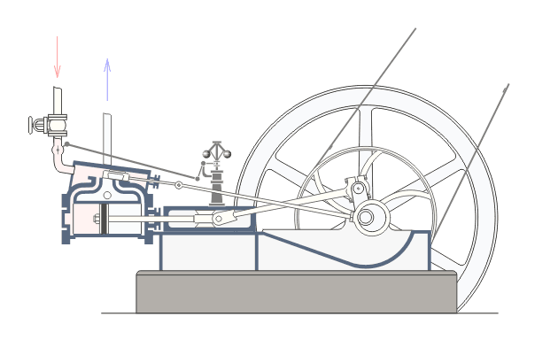

JDŽ/JŽ serija 01 je
parna lokomotiva
 Parna lokomotiva je železnička lokomotiva koja za svoj pogon koristi snagu iz parne mašine. Ove lokomotive
koriste za gorivo neki zapaljiv čvrst materijal, obično je to ugalj, drvo ili koks, a radi dobijanja vodene pare u
kotlu, koja pod pritiskom vrši mehanički rad, odnosno okreće točkove...
sa pregrejanom parom za vuču brzih i putničkih vozova. Bila je u eksploataciji u
srpskim i jugoslovenskim železnicama
Železnice Srbije je akcionarsko društvo kome je glavna delatnost obavljanje prometa roba
i putnika na prugama, vuča vozova i održavanje vučnih jedinica, održavanje pruge i tehnički nadzor,
u Srbiji...
od
1912.
do
1985.
godine, a proizvođena je u nemačkim fabrikama „Švarckopf”
Berlin.
i „Mašinefabrik”
Karlsrue
Karlsrue (nem. Karlsruhe ) je univerzitetski grad u nemačkoj saveznoj državi Baden-Virtemberg. Nalazi se na istočnoj
obali reke Rajne blizu nemačko-francuske granice. Krajem 2010. imao je 294.761 stanovnika, i po tome je treći najveći grad u Baden-
Virtembergu.
od 1912. do 1923. godine. Ove lokomotive su imale popularan naziv Hiljadarka.
Parna lokomotiva je železnička lokomotiva koja za svoj pogon koristi snagu iz parne mašine. Ove lokomotive
koriste za gorivo neki zapaljiv čvrst materijal, obično je to ugalj, drvo ili koks, a radi dobijanja vodene pare u
kotlu, koja pod pritiskom vrši mehanički rad, odnosno okreće točkove...
sa pregrejanom parom za vuču brzih i putničkih vozova. Bila je u eksploataciji u
srpskim i jugoslovenskim železnicama
Železnice Srbije je akcionarsko društvo kome je glavna delatnost obavljanje prometa roba
i putnika na prugama, vuča vozova i održavanje vučnih jedinica, održavanje pruge i tehnički nadzor,
u Srbiji...
od
1912.
do
1985.
godine, a proizvođena je u nemačkim fabrikama „Švarckopf”
Berlin.
i „Mašinefabrik”
Karlsrue
Karlsrue (nem. Karlsruhe ) je univerzitetski grad u nemačkoj saveznoj državi Baden-Virtemberg. Nalazi se na istočnoj
obali reke Rajne blizu nemačko-francuske granice. Krajem 2010. imao je 294.761 stanovnika, i po tome je treći najveći grad u Baden-
Virtembergu.
od 1912. do 1923. godine. Ove lokomotive su imale popularan naziv Hiljadarka.
Stručnjaci sa Mašinskog odeljenja Direkcije Srpskih državnih železnica pristupili su projektovanju prve originalne brzovozne lokomotive za pruge normalnog koloseka 1908. godine. Uslov je bio da lokomotiva može vući voz mase 250 tona na Raljskom usponu (13 promila) na pruzi Beograd — Niš brzinom od 55 km/h (na ostalim manjim usponima 70 km/h), a da joj maksimalna brzina bude 90 km/h. Inženjeri iz SDŽ koji su odredili glavne karakteristike, konstruisanje ove lokomotive poverili su berlinskom „Švarckopfu” (nem. Schwartzkopf). U to vreme se u svetu već eksperimentisalo sa lokomotivama na pregrejanu paru, sa dosta različitim iskustvima u odnosu na do tada dominantnu zasićenu paru. U želji da i sami steknu iskustvo na tom planu, inženjeri SDŽ su pristupili nabavci lokomotiva.
Parna lokomotiva JDŽ serije 01 i dizel-motorna kola Ganc 1937. u stanici Niš
Srpske državne železnice su 1910. godine od berlinske fabrike „Švarckopf” naručile 14 lokomotiva tipa Preri, rasporeda osovina 1–C–1. Te lokomotive su stigle u Srbiju 1912. godine, i to 8 lokomotiva sa zasićenom parom (kasnije JDŽ 04) i 6 lokomotiva sa pregrejanom parom, obeleženih sa SDŽ 121 do 126, koje su 1933. godine prenumerisane u JDŽ 01-121 do 01-126. Iskustva na domaćim prugama pokazala su da su lokomotive na pregrejanu paru mnogo bolje u eksploataciji, nakon čega je odlučeno da se nabavi 120 lokomotiva ovog tipa. Nemačke fabrike „Švarckopf” Berlin i „Mašinenfabrik” (nem. Maschinenfabrik) Karlsrue isporučile su 1922. i 1923. godine na ime reparacije železnicama SHS 120 lokomotiva serije SHS 1001 do 1120. Ova lokomotiva, popularna Hiljadarka, prenumerisana je takođe 1933. godine u JDŽ 01-001 do 120. Isporuke 120 lokomotiva SHS od 1001 do 1120 išle su po sledećem redosledu:
I SHS 1001 do 1081 (fabričkih brojeva od 7911 do 8002) isporučila je fabrika „Švarckopf” 1922. godine
II SHS 1082 do 1100 (fabričkih brojeva od 2244 do 2262) isporučila je fabrika „Mašinefabrik” 1922. godine
III SHS 1101 do 1120 (fabričkih brojeva od 8138 do 8158) isporučila je fabrika „Švarckof” 1923. godine
Lokomotive su služile za vuču međunarodnih brzih vozova (kao i putničkih), a nakon Drugog svetskog rata i specijalnih brzoteretnih vozova za prevoz denčanih pošiljki (pošiljke koje se transportuju službenim vagonima i pakuju se u kalete i pakete, maksimalne težine 5.000 kg) poznatih kao vozovi Laste. Od 1919. do 1929. godine, vuču najbržih međunarodnih vozova na pruzi Beograd — Niš S. O./O. S. (Simplon orijent) na liniji Pariz — Carigrad i obratno, obavljala je lokomotiva serije 01. [1.0] Sastav voza je bio osam četvoroosovinskih kola, a masa 320 tona. Čisto vreme vožnje ovih vozova u smeru ka Nišu je bilo 4 časa i 53 minuta (u suprotnom smeru 4 časa i 53 minuta); sa bavljenjem u međustanicama, vreme putovanja je trajalo 5 časova i 12 minuta u smeru ka Nišu (5 časova i 15 minuta u suprotnom smeru). Tehnička brzina voza u smeru ka Nišu je bila 49,97 km/h (u suprotnom smeru 50,31 km/h), a komercijalna brzina prema Nišu 46,92 km/h (46,62 km/h u suprotnom smeru). [1.1] Najveći brzinski rekord na ovim prostorima, čija su obaranja u to doba bila veoma popularna širom sveta, postavila je lokomotiva 01 na relaciji Beograd — Zagreb. Ideja o superekspresnoj parnoj lokomotivi začeta je na Mašinskom odeljenju Generalne direkcije JDŽ, nakon čega je u beogradskoj ložionici lokomotiva JDŽ serije 01-101 prerađena (oblaganjem limova sa posebnim aerodinamičnim oblikom, po uzoru na druge brzovozne lokomotive). [2] Na probnoj vožnji 1937. godine, aerodinamična lokomotiva — popularnog naziva Leteći Beograđanin — vukla je voz od 5 kola, mase 158 tona i brzinom od 122 km/h, pri čemu je lokomotiva imala miran hod. Ova superekspresna lokomotiva je na jednoj deonici postigla za to vreme neverovatnu brzinu od 146 km/h. [3] Početkom šezdesetih godina 20. veka, ŽTP „Beograd” je u svom inventarskom parku imao 56 lokomotiva serije 01, tada vodećih lokomotiva u putničkom saobraćaju. Lokomotive su bile locirane u ložionicama Beograd, Niš, Kraljevo, Zaječar, Subotica i Kosovo Polje. Modernizacijom železnice, prvo je počelo povlačenje ovih lokomotiva s magistralnih pruga. Lokomotive ove serije su se 1970-ih još zadržale u ložionicama Zaječar, Niš, Kraljevo i Lapovo. Poslednjih 5 lokomotiva „ugašeno” je 1985. godine u ložionici Zaječar, čime je prestala njihova upotreba u javnom saobraćaju.
Kao muzejski eksponati, sačuvane su sledeće lokomotive:
▪ 01-019 — Lapovo
(fotografija: „JŽ 01-019 u veoma lošem stanju (2010)” )
)
▪ 01-035 — Niš
(fotografija: „JŽ 01-035 u veoma lošem stanju (2006)”)
▪ 01-043 — Kosovo Polje(fotografija desno)
▪ 01-070 — Subotica
(fotografija: „JŽ 01-070 u lošem stanju (2006)”)
▪ 01-085 — Beograd
▪ 01-121 — Niš ložionica Crveni Krst, prva lokomotiva nulte serije iz
1912.
(foto-galerija: „JŽ 01-121 u osrednjem stanju (2010)”)
Ove lokomotive kao kulturna dobra od ogromnog tehnološkog značaja trebalo bi pod hitno obnoviti i zaštititi.
Sredinom 1970-ih godina osnovana je muzejska zbirka ŽG „Ljubljana”. Jedan od glavnih inicijatora ovog muzeja, slikar i veliki ljubitelj parnih lokomotiva
Stane Kumar,
insistirao je da se nabavi jedna lokomotiva serije 01. Lokomotiva 01-074 kupljena je sredinom ’70-ih po ceni starog gvožđa, u Subotici gde je upravo bila određena za kasaciju. Ova lokomotiva je danas u veoma dobrom stanju i izložena je kao muzejski eksponat u
ljubljanskom
naselju Moste.
(slika desno, takođe foto-galerija: „Slike za JŽ 01-074”)
Za muzejski voz Romantika,
1996.
godine obnovljena je lokomotiva 01-088, u fabrici „Šinvoz” u
Zrenjaninu.
(foto-galerija: „JŽ 01-088”)
Lokomotiva voza Romantika JŽ 01-088 danas uz parne lokomotive serija 51, 33 i 62 čini vučni park muzejskog voza.
(foto-galerija: Lokomotive turističkog voza „Romantika”)
Parna lokomotiva JŽ serije 01 je u praksi bila odlična i spada među najuspešnije tipove lokomotiva. Među mašinovođama, ova lokomotiva je bila jedna od najomiljenijih i najpouzdanijih lokomotiva na prugama Jugoslovenske železnice u 20. veku. Ima četvorocilindarsku parnu mašinu,  Parna (klipna) mašina, ili parni stroj (parostroj) predstavlja motor koji transformiše toplotnu energiju vodene pare u rad, najčešće rotaciono kretanje. Spada u grupu klipnih toplotnih motora sa spoljaš-njim sagorevanjem. Parne mašine su se koristile kao pogon pumpi, parnih lokomotiva, parobroda i parnih traktora, te su bile temelj industrijske revolucije. sa pregrejanom parom, vazdušnu kočnicu „Knor” (nem. Knorr), „Šmitov” (nem. Schmitt) pregrejač i „Hojzingerovo” (nem. Heusinger) kormilo. Lokomotive su imale ugrađene brzinomere marke „Deuta Berlin”. U početku, lokomotive su imale plinsko osvetljenje; kasnije je ono zamenjeno električnim. Druge karakteristike ove lokomotive uključuju okrugle parorazvodnike, šiljasta vrata dimne komore i četvoroosovinski tender. Lokomotive s brojem od 100 imale su i vodočistače. Ove lokomotive su rekonstrukcijom dobile nove parorazvodnike „Nikolaj”, koji su služili kao dvostruke vazdušne pumpe i kao izjednačivači pritiska u cilindrima kada se lokomotiva kretala sa zatvorenim regulatorom (kada je cilindar bio bez pare).


{kind=link}
{kind=link}